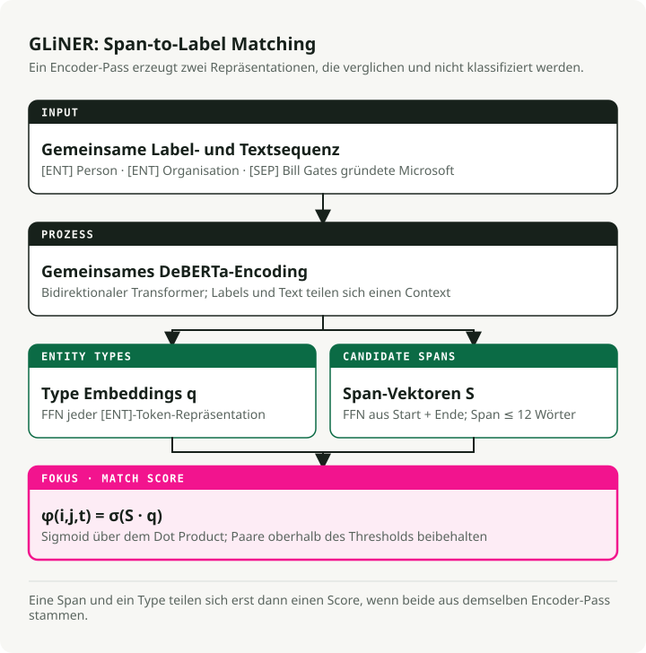
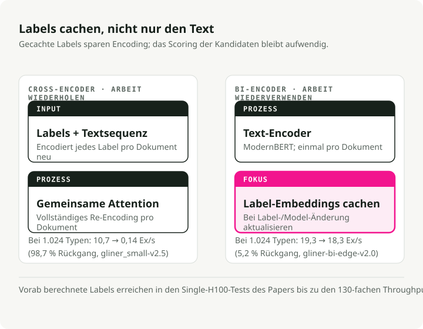
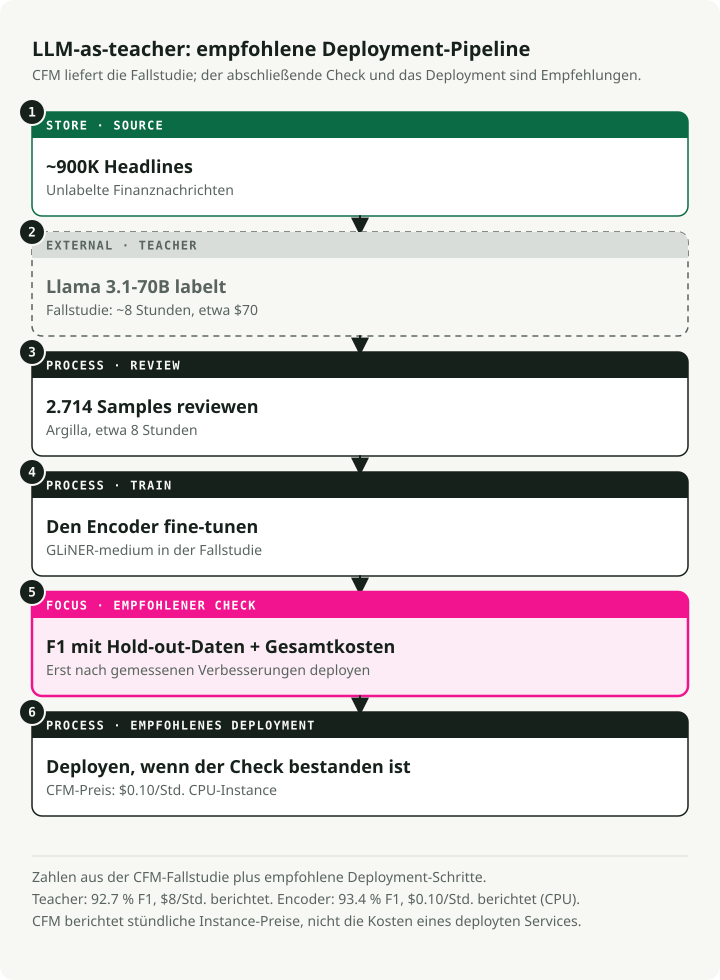
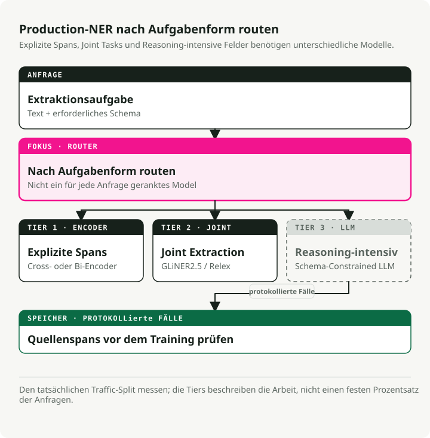

Automatische Übersetzung
Dieser Artikel wurde automatisch aus der englischen Originalversion übersetzt.
Der definitive Leitfaden zu NER im Jahr 2026: Encoder, LLMs und die 3-Schichten-Produktionsarchitektur
Vor zwei Jahren bedeutete die Wahl eines NER-Ansatzes, sich zwischen Geschwindigkeit (Encoder-Modelle) und Genauigkeit (LLMs) zu entscheiden. Dieser Trade-off ist verschwunden. Ein GLiNER-Modell mit 300M Parametern erreicht die Zero-Shot-Genauigkeit eines UniNER mit 13B Parametern und läuft dabei 100x schneller. Eine neuere Bi-Encoder-Variante skaliert auf Millionen von Entitätstypen mit einem 130x Durchsatzvorteil gegenüber dem ursprünglichen Cross-Encoder. Das daraus entstandene Produktionsmuster: LLMs zum Labeln von Daten verwenden, kompakte Encoder feinabstimmen, mit ONNX oder Rust deployen.
Ich habe das begleitende Repo aufgebaut und jeden wichtigen Ansatz benchmarked. Encoder haben den Produktionsmarkt für NER gewonnen. LLMs bleiben essenziell, aber als Generatoren für Trainingsdaten statt als Inferenz-Engines. Dieser Leitfaden behandelt die Papers, Benchmarks und Deployment-Muster hinter diesem Wandel.
Begleitendes Repo: ner-field-guide — ausführbare Demos für GLiNER, ONNX-Export, LLM-as-teacher-Pipeline und strukturierte Extraktion mit Instructor.
Kurzfassung: Du musst NER-Modelle nicht mehr von Grund auf selbst bauen. Für Zero-Shot-Extraktion schlägt GLiNER auf CPU via ONNX selbst die neuesten LLMs bei nahezu null Kosten. Für domänenspezifische Aufgaben liefert die LLM-as-teacher-Pipeline (LLM labelt → Review → Fine-Tuning) Encoder mit 90–93%+ F1. Für Fälle, die Reasoning brauchen, nutze Instructor oder Outlines mit einer LLM-API — plane aber mit \$2+/1K Dokumenten. Die 3-Schichten-Architektur kombiniert alle drei.
Warum NER jetzt wichtiger ist: Agents, RAG und Document Intelligence
NER bedeutet immer noch dasselbe: benannte Spans im Text finden und klassifizieren. Geändert hat sich, wo es eingesetzt wird. Früher war es der letzte Schritt in einer NLP-Pipeline, das stille Utility-Element, über das niemand Blogposts schrieb. Heute ist es ein Baustein in RAG-Systemen, Agent-Loops und Dokumentverarbeitungsplattformen. Deshalb ist die NER-Forschungswelle von 2024–2026 auch jenseits akademischer Benchmarks relevant.
RAG: Bessere Retrievals durch Entitätsextraktion
Standard-RAG — Text in Chunks zerlegen, Embeddings erzeugen, per Ähnlichkeit abrufen und hoffen, dass es passt — bricht auseinander, wenn Nutzer nach spezifischen Entitäten fragen. Wenn jemand fragt: "was hat Anthropic über model safety in Q4 2024 gesagt?", muss das System "Anthropic" und "Q4 2024" als Filter erkennen und darf sich nicht nur auf Embedding-Ähnlichkeit verlassen.
Beim Indexing extrahierst du Entitäten aus jedem Chunk und speicherst sie als Metadaten: {"organizations": ["Anthropic"], "dates": ["Q4 2024"], ...}. So kannst du vor der Vektorsuche nach Entitäten filtern. Knowledge-Graph-RAG (GraphRAG, LlamaIndex property graphs) geht weiter: NER plus Relation Extraction baut einen Graphen, der Multi-Hop-Fragen beantworten kann, an denen flache Embeddings scheitern.
Zur Query-Zeit steuern aus der Benutzerfrage extrahierte Entitäten das Routing. Eine Frage mit einem Firmennamen geht an einen Finanzindex, eine mit Medikamentennamen an eine klinische Wissensdatenbank. GLiNER funktioniert hier gut, weil Query-Entitäten unvorhersehbar sind — du kannst nicht für jeden neuen Entitätstyp, nach dem Nutzer fragen könnten, neu trainieren.
AI Agents: Text in strukturierte Fakten umwandeln
Agents erhalten unstrukturierten Text — Webseiten, API-Antworten, Nutzernachrichten — und müssen darauf handeln. NER wandelt diesen Text in strukturierte Fakten um, über die der Agent schlussfolgern, die er speichern oder an Tools weitergeben kann.
Relevant ist es vor allem an zwei Stellen.
Die erste ist Tool-Routing. Wenn ein Nutzer sagt: "schedule a meeting with Sarah Chen from Accenture on Thursday at 2pm", muss der Agent PERSON: Sarah Chen, ORGANIZATION: Accenture und DATETIME: Thursday 2pm extrahieren, bevor er die Calendar API aufruft. Ein Encoder-NER-Modell schafft das in unter 10ms. Ein LLM fügt pro Aufruf 1–2 Sekunden hinzu, und diese Verzögerung summiert sich über mehrstufige Workflows, bis sich ein "sofortiger" Agent nicht mehr sofort anfühlt.
Die zweite Stelle ist Entitätstracking über Gespräche hinweg. Agent-Memory-Systeme müssen wissen, dass "Sarah" in Turn 3 und "Ms. Chen" in Turn 12 dieselbe Person sind. NER identifiziert die Spans; Entity Linking löst sie auf dieselbe ID auf.
Die Einschränkung in beiden Fällen ist Latenz. Ein NER-Aufruf mit 200ms in einer 10-stufigen Agent-Kette fügt 2 Sekunden wahrgenommene Verzögerung hinzu. Deshalb sind Encoder-Modelle und nicht LLM-basierte Extraktion die richtige Wahl für Entitätsarbeit innerhalb von Agent-Loops.
Document Intelligence: Von Bildern zu strukturierten Daten
OCR wandelt Bilder in Text um. NER wandelt Text in strukturierte Felder um. Zusammen treiben sie Dokumentdigitalisierung im großen Maßstab an.
Die Standardpipeline: OCR ausführen (Tesseract, Azure Document Intelligence, AWS Textract), um Text und Bounding Boxes zu erhalten, dann NER ausführen, um strukturierte Felder — invoice_number, vendor_name, line_items, total, due_date — aus dem zu extrahieren, was zuvor ein JPEG einer Papierrechnung war. Derselbe Ansatz funktioniert für Verträge, Krankenakten und regulatorische Einreichungen.
Moderne Plattformen kombinieren drei Schritte: Layout Understanding (ist das ein Header oder eine Tabellenzelle?), Entitätsextraktion (welchen Typ hat dieser Text?) und Relation Extraction (welche Werte gehören zusammen?). GLiNER 2 behandelt alle drei in einem einzigen Forward Pass; ein einzelner Modellaufruf kann {vendor: "Acme Corp", amount: "\$4,200", due_date: "2026-04-15"} aus einer Rechnung zurückgeben.
Hier zählen die Kosten. Eine mittelgroße Buchhaltungsfirma verarbeitet monatlich Zehntausende Rechnungen. Jede einzelne durch ein LLM zu routen, selbst durch ein kosteneffizientes Modell wie GPT-5.4 Nano, kostet Hunderte Dollar pro Tag. Ein feinabgestimmtes GLiNER auf CPU kostet Centbeträge. Dein CFO wird den Unterschied bemerken. Der Weg: 500 Beispielrechnungen mit einem LLM annotieren, GLiNER auf den Ergebnissen feinabstimmen, auf CPU zu \$0.10/Stunde deployen.
PII-Erkennung und LLM-Guardrails
Datenschutzregulierungen (GDPR, HIPAA, CCPA) verlangen, personenbezogene Daten zu finden, bevor sie nachgelagerte Systeme erreichen. Für LLM-Deployments bedeutet das: Eingaben scannen, bevor sie das Modell erreichen, und Ausgaben scannen, bevor sie den Nutzer erreichen.
NER löst das direkt. De-Identification-Modelle finden PERSON, SSN, PHONE, EMAIL, ADDRESS-Spans und redigieren sie entweder oder ersetzen sie durch künstliche Äquivalente. Die klinischen Modelle von John Snow Labs erreichen 96% F1 bei der PHI-Erkennung (vs. Azure 91%, AWS 83%, GPT-4o 79%) und verarbeiten dabei 100K+ klinische Notizen pro Tag.
Für LLM-Guardrails funktioniert NER als Pre-Screening-Layer: Benutzereingaben vor dem Senden an eine externe API auf PII scannen und dann blockieren oder anonymisieren. Das ist schneller und einfacher, als das LLM zur Selbstmoderation aufzufordern. GLiNER ist hier besonders nützlich, weil sich PII-Kategorien je nach Rechtsraum unterscheiden. Du kannst neue Entitätstypen wie "genetic information" unter einer neuen Regulierung hinzufügen, ohne neu zu trainieren.
GLiNER schreibt die NER-Ökonomie mit einem 300M-Parameter-Modell neu
GLiNER (NAACL 2024, Zaratiana et al.) hat encoderbasiertes NER zu einem Bruchteil der Kosten konkurrenzfähig mit LLMs gemacht. Statt NER als Sequence Labeling oder Textgenerierung zu behandeln, formuliert GLiNER es als Matching-Problem: jeden Kandidaten-Textspan (jede zusammenhängende Wortfolge wie "Bill Gates" oder "Microsoft") gegen jedes Entitätstyp-Label scoren und dann die hoch bewerteten Paare behalten.
Das Modell nimmt Entitätstyp-Labels und Eingabetext als eine einzelne Sequenz: [ENT] person [ENT] organization [ENT] date [SEP] Bill Gates founded Microsoft.... Ein bidirektionaler Transformer (DeBERTa-v3) kodiert alles gemeinsam.
Aus dem Output baut das Modell zwei Mengen von Repräsentationen: eine für Entitätstypen (aus [ENT]-Tokenpositionen) und eine für Textspans (durch Kombination von Start- und End-Tokenvektoren über ein kleines FFN). Das Punktprodukt zwischen einer Span-Repräsentation und einer Entitätstyp-Repräsentation ergibt einen Score.
Wendet man sigmoid an, erhält man die Wahrscheinlichkeit, dass der Span von Token \(i\) bis Token \(j\) zum Entitätstyp \(t\) gehört: \(\\phi(i, j, t) = \\sigma(S_{ij}^T \\cdot q_t)\), wobei \(S_{ij}\) der vom FFN erzeugte Span-Vektor ist und \(q_t\) das Entitätstyp-Embedding aus dem entsprechenden [ENT]-Token (Zaratiana et al., 2024, Gl. 1). Spans sind auf 12 Tokens begrenzt, um die Ausführung schnell zu halten.

In der Praxis bedeutet das, dass jede natürlichsprachliche Beschreibung als Label zur Inferenzzeit funktioniert. Kein Retraining. Du übergibst einfach die gewünschten Entitätstypen ("person", "adverse drug reaction", "financial instrument"), und das Modell scored Spans dagegen. Es gibt drei Größen: GLiNER-S (50M Parameter), GLiNER-M (90M) und GLiNER-L (300M). Die Trainingsdaten stammen aus dem Pile-NER-Datensatz: 44.889 Passagen mit 240K Entity Spans über 13K Entitätstypen, alle von ChatGPT gelabelt. Das Training von GLiNER-L dauert etwa 4 Stunden auf einer einzelnen A100 (Zaratiana et al., 2024).
Benchmark-Ergebnisse
Zero-Shot-Ergebnisse aus Zaratiana et al. (2024), Tabellen 1 und 2:
| Modell | Params | CrossNER F1 | Durchschnitt (20 Datensätze) |
|---|---|---|---|
| GLiNER-L | 300M | 60.9% | 47.8% |
| GoLLIE | 7B | 58.0% | -- |
| UniNER-13B | 13B | 55.6% | -- |
| GLiNER-M | 90M | 55.4% | -- |
| UniNER-7B | 7B | 53.7% | 45.7% |
| GLiNER-S | 50M | 52.7% | -- |
| ChatGPT (GPT-3.5) | -- | 47.5% | 36.5% |
GLiNER-M mit 90M Parametern erreicht nahezu UniNER-13B (55.4% vs. 55.6% F1), ist dabei aber 140x kleiner. Selbst das kleine 50M GLiNER-S schlägt ChatGPT (GPT-3.5) um 5 F1-Punkte. Die multilinguale Variante — nur auf englischen Daten trainiert — schlägt ChatGPT in 8 von 10 nicht-englischen Sprachen (Zaratiana et al., 2024). Hinweis: Neuere LLMs (GPT-5.4, Claude 4.6) würden auf diesen Benchmarks wahrscheinlich höher punkten, aber die Kostenschere ist nur weiter aufgegangen — diese Modelle sind immer noch um Größenordnungen teurer als ein 90M-Encoder auf CPU.
Das Ökosystem ist groß: 280+ GLiNER-kompatible Modelle auf HuggingFace, ~350.000 PyPI-Downloads pro Monat, ~2.800 GitHub-Stars. Varianten decken biomedizinischen Text, PII-Erkennung, News und multilingualen Support ab.
Aus quickstart.py:
from gliner import GLiNER
model = GLiNER.from_pretrained("urchade/gliner_medium-v2.1")
text = "Bill Gates founded Microsoft on April 4, 1975."
labels = ["person", "organization", "date"]
entities = model.predict_entities(text, labels, threshold=0.5)
for entity in entities:
print(f" {entity['text']} => {entity['label']} ({entity['score']:.3f})")
# Bill Gates => person (0.987)
# Microsoft => organization (0.991)
# April 4, 1975 => date (0.974)
Wie GLiNER im Vergleich zu spaCy abschneidet
Jeder NER-Leitfaden wäre ohne spaCy unvollständig — ~21M Downloads pro Monat und eine der dauerhaftesten NLP-Bibliotheken in Produktion. Aber spaCy löst ein anderes Problem als GLiNER.
Die Pipelines von spaCy (en_core_web_sm, en_core_web_trf) machen Closed-Vocabulary-NER: eine feste Menge an Entitätstypen (PERSON, ORG, GPE, DATE usw.), die zur Trainingszeit definiert sind. Einen neuen Entitätstyp hinzufügen? Gelabelte Daten sammeln und neu trainieren. Das transformerbasierte en_core_web_trf erreicht 89.8% F1 auf OntoNotes 5.0, aber nur für seine 18 vordefinierten Typen.
GLiNER macht Open-Vocabulary-NER: Jedes Label funktioniert zur Inferenzzeit, ohne Retraining. Das macht es zur besseren Wahl, wenn Entitätstypen nicht im Voraus bekannt sind, sich häufig ändern oder domänenspezifisch sind ("adverse drug reaction", "financial instrument", "threat indicator").
Meine Empfehlung: Verwende spaCy für Standard-Entitätstypen, bei denen vortrainierte Pipelines gut validiert sind. Verwende GLiNER, wenn du flexible Zero-Shot-Typen brauchst oder wenn sich deine Pipeline ohne Retraining anpassen muss. Beides funktioniert gut zusammen — spaCy übernimmt Tokenisierung und Satzsegmentierung, GLiNER die Entitätsextraktion.
UniNER und NuNER: Wie klein kann man werden?
UniNER (ICLR 2024, Zhou et al.) und NuNER (EMNLP 2024, Bogdanov et al.) destillieren beide LLM-Annotationen in kleinere NER-Modelle — aber sie sind sich uneinig darüber, wie klein man werden kann.
UniNER: Der maximalistische Weg
UniNER feinabstimmt LLaMA-7B/13B auf 44.889 NER-Paare (240K Entitäten, 13K Typen), die von ChatGPT erzeugt wurden. Für jeden Entitätstyp beantwortet das Modell "What describes [type] in the text?" und gibt JSON-Listen aus. Ein zentraler Trainingstrick: frequenzbasiertes negatives Sampling hebt F1 von 31.5% auf 53.4% an (Zhou et al., 2024).
UniNER-7B erreicht 41.7% Zero-Shot-F1 über 43 Datensätze hinweg — und schlägt damit ChatGPTs 34.9% um 7 Punkte. Die 13B-Variante erreicht 43.4%, nur 1.7 Punkte mehr bei nahezu doppeltem Compute-Bedarf (Zhou et al., 2024).
Das Produktionsproblem: Als 7B-autoregressives Modell benötigt UniNER N Forward Passes für N Entitätstypen, braucht 14GB+ VRAM (damit ist dein GPU-Budget vor dem Mittagessen weg) und hat eine restriktive CC BY-NC 4.0-Lizenz.
NuNER: Der minimalistische Weg
NuNER startet von RoBERTa-base (125M Parameter) und verwendet kontrastives Training mit 4,38 Millionen GPT-3.5-Annotationen über 200K Konzepte hinweg — Gesamtkosten der Annotation unter \$500. Nach dem Training wird der Konzept-Encoder verworfen; der Text-Encoder lässt sich als Ersatz für RoBERTa in jede Standard-NER-Pipeline einsetzen (Bogdanov et al., 2024).
Die Ergebnisse: NuNER schlägt plain RoBERTa bei allen Few-Shot-Größen um 6–15 F1-Punkte. Mit nur einem Dutzend Beispielen pro Entitätstyp erreicht NuNER UniNER-7B, obwohl es 56x kleiner ist (Bogdanov et al., 2024).
Beide Papers zeigen dasselbe: Die Destillation von LLM-Annotationen in kleinere Modelle erzeugt NER, das den Teacher schlägt. Und dafür braucht man keine 7B Parameter — 125M reichen aus, wenn Fine-Tuning-Daten verfügbar sind, mit MIT-Lizenz und CPU-freundlicher Inferenz.
GLiNER 2: Ein Modell, vier Aufgaben
Das ursprüngliche GLiNER-Ökosystem hatte ein wachsendes Problem: separate Modelle für NER (GLiNER), Relation Extraction (GLiREL), Klassifikation (GLiClass) und dokumentweite RE (GLiDRE) — jedes mit eigenem Deployment, Docker-Container, Monitoring und eigenen Fehlermodi. GLiNER 2 (EMNLP 2025, Zaratiana et al.) führt alle vier in einem einzigen 205M-Parameter-Modell mit schema-getriebener Schnittstelle zusammen.
Die Architektur behält das Cross-Encoder-Design bei, erweitert den Kontext aber auf 2.048 Tokens (4x das Original) und ergänzt deklarative Schemata zur Definition von Extraktionsaufgaben. Das Training nutzt 135.698 reale Dokumente, annotiert mit GPT-4o, plus 118.636 synthetische Beispiele (Zaratiana et al., 2025).
Auf Zero-Shot-CrossNER erreicht GLiNER 2 0.590 F1 — nahe an GPT-4o mit 0.599, wie im Paper benchmarked (Mitte 2025). Neuere Modelle wie GPT-5.4 würden wahrscheinlich höher punkten, aber zu einem Bruchteil der Geschwindigkeit und Kosten von GLiNER 2. Für Klassifikation erreicht es 0.72 im Durchschnitt über 7 Benchmarks hinweg und schlägt damit DeBERTa-v3-large (0.69). Auf CPU läuft GLiNER 2 bei Klassifikation in 130–208ms, unabhängig von der Anzahl der Labels. DeBERTa skaliert linear: 1.714ms für 5 Labels, 16.897ms für 50 (Zaratiana et al., 2025).
from gliner2 import GLiNER2
extractor = GLiNER2.from_pretrained("fastino/gliner2-base-v1")
# Multi-task composition in ONE forward pass
schema = (extractor.create_schema()
.entities({"person": "Names of people", "company": "Organization names"})
.classification("sentiment", ["positive", "negative", "neutral"])
.relations(["works_for", "founded", "located_in"])
.structure("product_info")
.field("name", dtype="str")
.field("price", dtype="str"))
results = extractor.extract(text, schema)
Ein Modelldeployment ersetzt vier. Einfachere Infrastruktur, konkurrenzfähige Genauigkeit.
Der Bi-Encoder: Skalierung auf NER mit Millionen Labels
Das ursprüngliche GLiNER kodiert Labels und Text gemeinsam — das erzeugt einen Bottleneck. Mehr Entitätstypen bedeuten eine längere Eingabesequenz, und die Performance fällt jenseits von ~30 Typen schnell ab. Der GLiNER Bi-Encoder (Februar 2026, Stepanov et al.; arXiv 2602.18487) behebt das, indem er Text- und Labelkodierung in zwei separate Transformer aufteilt.

Der Text-Encoder verwendet ModernBERT (Ettin family), der Label-Encoder nutzt Sentence Transformers (BGE oder MiniLM). Spans und Labels werden per Punktprodukt gescort. Der Trick: Entitätstyp-Embeddings lassen sich einmalig vorab berechnen und cachen. Zur Inferenzzeit muss nur noch der Text kodiert werden — das Nachschlagen der Labels ist sofort verfügbar.
Es gibt vier Modellgrößen, alle auf CrossNER benchmarked (Stepanov et al., 2026, Tabelle 1):
| Modell | Parameter | CrossNER F1 | Durchsatz (H100) | Mit vorab berechneten Labels |
|---|---|---|---|---|
| bi-edge-v2.0 | 60M | 54.0% | 13.64 ex/s | 24.62 ex/s |
| bi-small-v2.0 | 108M | 57.2% | 7.99 ex/s | 15.22 ex/s |
| bi-base-v2.0 | 194M | 60.3% | 5.91 ex/s | 9.51 ex/s |
| bi-large-v2.0 | 530M | 61.5% | 2.68 ex/s | 3.60 ex/s |
Bei 1.024 Entitätstypen verliert der Bi-Encoder (edge, vorab berechnet) gegenüber einem einzelnen Label nur 5.2% Durchsatz. Der Cross-Encoder verliert 98.7% (10.7 → 0.14 ex/s). Das ist ein 130x Durchsatzvorteil im großen Maßstab. Mit 100 Entitätstypen auf einer einzelnen H100 verarbeitet der Bi-Encoder 1,96 Millionen Vorhersagen pro Tag gegenüber 368K für den Cross-Encoder (Stepanov et al., 2026).
Auch die Genauigkeit hält mit. Bi-encoder-large erreicht 61.5% CrossNER F1, leicht vor dem Cross-Encoder mit 60.9%. Die Autoren empfehlen bi-base-v2.0 (194M) als Sweet Spot, das 98% der Genauigkeit des großen Modells bei 2.6x Geschwindigkeit erreicht (Stepanov et al., 2026).
from gliner import GLiNER
model = GLiNER.from_pretrained("knowledgator/gliner-bi-base-v2.0")
# Pre-compute embeddings for massive label sets — encode once, use forever
entity_types = ["person", "organization", "date"] # Can be thousands or millions
entity_embeddings = model.encode_labels(entity_types, batch_size=8)
# Inference only encodes text — labels are a cached lookup
outputs = model.batch_predict_with_embeds(texts, entity_embeddings, entity_types)
Anwendungsfälle sind unter anderem biomedizinisches NER gegen die UMLS-Ontologie (4M+ Konzepte), Enterprise-Taxonomien, die sich ohne Modell-Retraining weiterentwickeln, und Entity Linking über das begleitende Framework GLiNKER.
LLMs als Teacher: Die \\(70-Pipeline, die das \\\)8/Stunde-Modell schlägt
Das Muster LLM-as-teacher hat sich zu einer Standardpipeline in der Produktion entwickelt. Drei Studien zeigen, was es kostet und was man dafür bekommt.

Die CFM-Fallstudie
Capital Fund Management extrahierte Firmennamen aus ~900K Finanz-News-Schlagzeilen. Zero-Shot-GLiNER erreichte 87.0% F1. Sie verwendeten Llama 3.1-70b (damals das stärkste offene Modell), um den vollständigen Datensatz in ~8 Stunden für ~\$70 zu annotieren, und prüften anschließend 2.714 Samples in weiteren 8 Stunden manuell über Argilla.
Das Fine-Tuning von GLiNER auf diesen Daten steigerte die Performance auf 93.4% F1 — und übertraf damit sogar den Llama-70b-Teacher mit 92.7%. Das feinabgestimmte Modell läuft für \\(0.10/Stunde auf CPU** gegenüber \\\)8/Stunde für den Teacher — 80x günstiger** bei besserer Genauigkeit (CFM Case Study). Heute würdest du mit Llama 4 Maverick oder GPT-5.4 Mini zu ähnlichen oder geringeren Kosten sogar noch bessere Teacher-Annotationen bekommen.
Die Refuel-AI-Studie
Refuel AI benchmarkte LLM-Labeling auf 8 NLP-Datensätzen, darunter CoNLL-2003. GPT-4 (März 2023) erreichte 88.4% Übereinstimmung mit Ground Truth — über 86.2% für erfahrene menschliche Annotatoren. LLMs waren 20x schneller und 7x günstiger. Ihr Ensembling-Ansatz — günstige Modelle für einfache Beispiele, GPT-4 für schwierige — erreichte 95%+ Übereinstimmung bei gleichzeitig niedrigen Kosten (Refuel AI Technical Report). Mit inzwischen verfügbaren GPT-5.4 und Claude 4.6 ist die Qualität der Teacher nur weiter gestiegen.
Tonic.ai Clinical NER
Tonic.ai zeigte, dass das Muster auch für klinisches NER funktioniert. Allein mit LLM-Annotationen wurde ein RoBERTa-LoRA-Modell auf 0.70 F1 auf dem NCBI Disease Corpus trainiert (vs. 0.81 mit vollständig menschlich gelabelten Daten). Bei der Extraktion von Healthcare IDs erreichte es 0.947 F1 — über dem Produktionsschwellenwert von 0.914 — ganz ohne menschlich gelabelte Daten.
Die Standardpipeline
Das Produktionsrezept hat sich auf sechs Schritte eingependelt:
- Annotation Guidelines in natürlicher Sprache schreiben
- Ein kleines menschlich gelabeltes Validierungsset erstellen (50–200 Dokumente)
- Ein LLM (GPT-5.4 Mini, Llama 4 Maverick oder Qwen3.5) verwenden, um Bulk-Trainingsdaten zu labeln
- Einen Teil über Argilla oder Label Studio prüfen
- Einen kompakten Encoder feinabstimmen (GLiNER, SpanMarker, RoBERTa)
- Zu 16–80x geringeren Inferenzkosten deployen
Die Kosten von NER sind nicht mehr "alle Trainingsdaten annotieren, indem man ein Heer von Studierenden anheuert". Sie sind jetzt: "ein gutes Validierungsset aufbauen, klare Richtlinien schreiben und das LLM den Rest erledigen lassen."
Wo GLiNER scheitert und LLMs essenziell bleiben
Der Sease-Benchmark (Oktober 2025) testete GLiNER gegen GPT-4.1-mini auf 30 Query-Parsing-Aufgaben. GPT-4.1-mini erreichte 100% vollständig korrekt. GLiNER kam auf 53% (16 von 30). Aber GLiNER antwortete in 0.08 Sekunden gegenüber 1.21 Sekunden des LLM — also 15x schneller.
GLiNER scheitert in drei spezifischen Mustern:
- Implizite Entitäten: "event" aus "Elton John performed at Madison Square Garden" extrahieren — im Text steht nicht wörtlich "event", aber das LLM schließt auf "concert"
- Sensitivität gegenüber Label-Formulierungen: "2022" scored mit 0.388 gegen "date", aber mit 0.958 gegen "year" — kleine Änderungen am Label verursachen große Schwankungen
- Value Mapping: GLiNER gibt den exakten Oberflächentext ("family houses") zurück statt des kanonischen Werts ("Single family house") — LLMs machen das natürlich
Verschachtelte und überlappende Entitäten
GLiNER hat auch Probleme mit verschachtelten Entitäten. In "New York University" würde ein Mensch sowohl "New York" (LOCATION) als auch "New York University" (ORGANIZATION) labeln. GLiNER wählt nur den höchstbewerteten Span. Das ist relevant in biomedizinischem Text ("acute myeloid leukemia" enthält sowohl eine Krankheit als auch einen Modifikator) und in juristischem Text (verschachtelte Organisationshierarchien). Spezialisierte Modelle können mit Nesting umgehen, aber das Flat-Span-Design von GLiNER nicht.
In der Praxis bedeutet das: GLiNER beherrscht explizite Entitätsextraktion — den Kern von Produktions-NER. LLMs übernehmen, wenn Extraktion Inferenz, Reasoning oder Mapping auf vordefinierte Ontologien erfordert. Nutze beides.
NER evaluieren: Metriken, Fallstricke und Testsets aufbauen
Ich habe Teams erlebt, die Modelle mit 95% F1 auf ihrem Testset ausgerollt haben, die in Produktion scheiterten, weil das Testset die reale Dokumentverteilung nicht widerspiegelte. Dein Testset ist nicht deine Produktionsdaten. Dieser Fehlermodus ist häufig genug, um ihn einzuplanen.
Die Kernmetriken
- Entity-level F1: Die Standardmetrik. Eine Vorhersage ist nur dann korrekt, wenn sowohl die Span-Grenzen als auch der Typ exakt mit der Ground Truth übereinstimmen. Das berichten die meisten Papers.
- Token-level F1: Bewertet jedes Token unabhängig. Bläht Ergebnisse auf, weil man für einen weitgehend richtigen langen Entity Span Teilkredit bekommt. Bevorzuge Entity-level F1.
- Precision vs Recall: Diese haben oft asymmetrische Kosten. Für De-Identification ist Recall wichtiger — einen Namen zu übersehen ist schlimmer als zu viel zu redigieren. Für Datenbankextraktion ist Precision wichtiger — falsche Einträge verfälschen nachgelagerte Analysen.
Häufige Evaluations-Fallstricke
- Inflation durch Partial Matches: "Bill" wurde extrahiert, während das Gold-Label "Bill Gates" ist — manche Skripte zählen das als Partial Match. Nutze exaktes Span Matching, sofern du keinen guten Grund dagegen hast.
- Typverwechslung: "Microsoft" wurde korrekt als Span identifiziert, aber als PERSON statt ORG gelabelt, sollte null Punkte geben. Prüfe, dass dein Evaluationscode das korrekt behandelt.
- Leakage im Testset: Wenn Testentitäten mit Trainingsentitäten überlappen, sind Scores aufgebläht. Zero-Shot-Benchmarks (CrossNER, Few-NERD) existieren, um Generalisierung zu testen.
Ein Domänen-Testset aufbauen
Für die Produktionsevaluierung empfehle ich:
- Aus Produktionsdaten samplen, nicht aus kuratierten Beispielen. Nimm die unordentlichen Dokumente auf, die dein Modell tatsächlich sehen wird.
- 200–500 annotierte Dokumente liefern stabile F1-Schätzungen. Unter 100 sind die Konfidenzintervalle zu breit.
- Mindestens zwei Annotatoren, mit Inter-Annotator-Agreement (Cohen's kappa > 0.8). Wenn Menschen sich uneinig sind, kann dein Modell nicht besser sein.
- Nach Schwierigkeit stratifizieren — einfache Fälle (sauberer Text, Standardtypen) und schwierige Fälle (mehrdeutige Entitäten, Jargon, verrauschter Text).
Produktions-NER in vier Branchen
Hier sind die ausgereiftesten NER-Deployments, die ich gefunden habe, mit konkreten Zahlen.
Healthcare
Healthcare hat das ausgereifteste NER-Tooling. John Snow Labs bietet 2.500+ vortrainierte Modelle, darunter 1.200+ für Healthcare, mit 400+ klinischen Entitätstypen, gemappt auf ICD-10, SNOMED CT, LOINC und RxNorm. Ihre De-Identification-Modelle erreichen 96% F1 (vs. Azure 91%, AWS 83%, GPT-4o 79%), wobei Providence St. Joseph Health täglich 100K–500K klinische Notizen verarbeitet.
Das Open-Source-OpenMed-Projekt bietet 380+ biomedizinische NER-Modelle mit 29.7M HuggingFace-Downloads und setzt auf 10 von 12 öffentlichen biomedizinischen Benchmarks neue State of the Art.
Financial NER
Der wichtigste Use Case: Extraktion aus SEC-Filings. Finance NLP von John Snow Labs extrahiert 11+ Entitätstypen aus 10-K/10-Q-Filings (Adressen, Ticker, Fiskaljahre, Börsen). Varianten von FinBERT-MRC erreichen 0.87–0.93 F1 auf Aufgaben zur Finanzentitätserkennung. Die zentrale Herausforderung: lange Dokumente und verschachtelte Entitäten in komplexen Finanzinstrumenten.
E-Commerce
NER im massiven Maßstab. Walmarts EAMT-System (KDD 2023) trainiert auf 965 Millionen Queries mit ~60 Entity Labels und erzielt in A/B-Tests einen 0.51% GMV Lift — Millionen an zusätzlichem Umsatz. Das Framework TripleLearn von Home Depot (AAAI 2021) steigerte NER-F1 durch iteratives Training von 69.5 auf 93.3.
Cybersecurity
Das iACE-System (CCS 2016) verarbeitete 71.000 Artikel aus 45 Security-Blogs und extrahierte 900K IOC-Items bei 98% Precision und 93% Recall. Moderne Systeme wie CyNER kombinieren DeBERTa (F1 >91%) mit regexbasierten IOC-Heuristiken. Der einheitliche Datensatz CyberNER (2025) harmonisiert vier Datensätze in 21 an STIX 2.1 ausgerichtete Entitätstypen, wobei RoBERTa 0.736 F1 erreicht.
Deployment-Optimierung: Von Python zu Inferenz unter einer Millisekunde
Ich habe im begleitenden Repo drei Wege getestet, um GLiNER für Produktion zu beschleunigen.
ONNX-Export
GLiNER hat native ONNX-Konvertierung, und auf HuggingFace existieren vorkonvertierte Modelle (onnx-community/gliner_small-v2.1). ONNX Runtime liefert auf CPU 1.5–3x Speedup gegenüber PyTorch, mit vier Optimierungsstufen von basic bis mixed precision.
Aus onnx_export.py:
# Export with quantization
# python convert_to_onnx.py --model_path model/ --save_path onnx/ --quantize True
# Load ONNX model — same API, faster inference
from gliner import GLiNER
model = GLiNER.from_pretrained("path/to/model", load_onnx_model=True)
# Same predict_entities call, 1.5-3x faster on CPU
entities = model.predict_entities(text, labels, threshold=0.5)
INT8-Quantisierung
Dynamische Quantisierung verkleinert Modelle um 2.4x (438MB → 181MB) bei weniger als 0.6% F1-Verlust. Die Geschwindigkeit verbessert sich auf CPU um 1.8x. Auf Intel-VNNI-CPUs mit ONNX Runtime erreicht INT8 bis zu 6x Speedup gegenüber PyTorch FP32.
from onnxruntime.quantization import quantize_dynamic, QuantType
# One-line quantization — 2.4x smaller, <1% F1 loss
quantize_dynamic("gliner.onnx", "gliner_int8.onnx", weight_type=QuantType.QInt8)
gline-rs: Rust-Reimplementierung
gline-rs (Apache 2.0) eliminiert Python-Overhead. Auf CPU: 6.67 seq/s gegenüber 1.61 in Python — ein 4.1x Speedup. Auf einer RTX 4080: 248.75 seq/s (gline-rs benchmarks). Es unterstützt Span- und Token-Modelle, GPU/NPU über ONNX Runtime und wird als crate auf crates.io ausgeliefert.
use gliner::{GLiNER, TokenMode, Parameters, RuntimeParameters, TextInput};
let model = GLiNER::<TokenMode>::new(
Parameters::default(), RuntimeParameters::default(),
"tokenizer.json", "model.onnx")?;
let input = TextInput::from_str(
&["My name is James Bond."], &["person", "vehicle"])?;
let output = model.inference(input)?;
// => "James Bond" : "person" (99.7%)
Das Paket fast-gliner bietet Python-Bindings via PyO3 — Rust-Geschwindigkeit mit Python-Ergonomie.
Zusammenfassung des Optimierungs-Stacks
| Optimierung | Speedup vs. PyTorch | Modellgröße | F1-Auswirkung | Am besten geeignet für |
|---|---|---|---|---|
| ONNX Runtime | 1.5–3x | Gleich | Keine | Schneller Gewinn, jede Hardware |
| INT8 Quantisierung | 3–6x | 2.4x kleiner | <0.6% Verlust | CPU-Deployment, speicherbeschränkt |
| gline-rs (Rust) | 4.1x (CPU) | ONNX-Format | Keine | Hoher Durchsatz, latenzkritisch |
| gline-rs + INT8 | 4–8x | 2.4x kleiner | <1% Verlust | Produktion im großen Maßstab |
Strukturierte Extraktion: Instructor vs. Outlines
Wenn du mehr Flexibilität brauchst, als Encoder-Modelle bieten — implizite Entitäten, Reasoning, Ontologie-Mapping — übernehmen zwei Bibliotheken die strukturierte Extraktion aus LLMs.
Instructor (~12.600 GitHub-Stars, ~8.8M Downloads/Monat Stand März 2026) von Jason Liu patcht LLM-SDKs so, dass sie Pydantic-Response-Modelle akzeptieren, mit automatischem Retry bei Validierungsfehlern. Es unterstützt 15+ Provider und inspirierte das native Structured-Output-Feature von OpenAI.
import instructor
from pydantic import BaseModel
from typing import List, Literal
from openai import OpenAI
class Entity(BaseModel):
name: str
label: Literal["PERSON", "ORGANIZATION", "LOCATION"]
class ExtractEntities(BaseModel):
entities: List[Entity]
client = instructor.from_openai(OpenAI())
result = client.chat.completions.create(
model="gpt-5.4-mini", temperature=0.0,
response_model=ExtractEntities,
messages=[{"role": "user", "content": "BioNTech SE acquired InstaDeep in the U.K."}])
# entities=[Entity(name='BioNTech SE', label='ORGANIZATION'), ...]
Outlines (~13.600 GitHub-Stars) von dottxt verfolgt einen anderen Ansatz: konstruierte Tokengenerierung über Finite State Machines. Statt Output zu generieren und bei Validierungsfehlern erneut zu versuchen, verhindert Outlines von vornherein, dass ungültige Tokens erzeugt werden — 100% Schema-Compliance, keine Retries. AWS-Benchmarks zeigen 98% Schema-Adhärenz gegenüber 76% bei Post-Generation-Validierung, mit 5x schnellerer Generierung im Vergleich zu unconstrained generation mit nachgelagerten Validierungs-Retries.
import outlines
model = outlines.models.transformers("microsoft/Phi-3-mini-128k-instruct")
generator = outlines.generate.json(model, ExtractEntities)
result = generator("Extract entities from: BioNTech SE acquired InstaDeep in the U.K.")
Die Wahl hängt davon ab, wo du deine Modelle betreibst. Instructor ist am besten für Cloud-LLM-APIs — schnelles Prototyping, Multi-Provider-Support, vertraute Pydantic-Muster. Outlines gewinnt bei lokalen Modellen, wenn du Formatgarantien ohne externe Abhängigkeiten brauchst. Beide funktionieren gut für NER-artige Extraktion, aber keines erreicht den Durchsatz von Encodern: Instructor fügt pro Aufruf 200ms–2s API-Latenz hinzu, und Outlines hängt von der Geschwindigkeit des lokalen Modells ab. Für NER mit hohem Durchsatz sind Encoder immer noch 10–100x schneller.
Die 3-Schichten-Produktionsarchitektur
So würde ich all das für Produktions-NER zusammensetzen.

Schicht 1 — Encoder-Modelle für bekannte Entitätstypen. GLiNER (Cross-Encoder für <30 Typen, Bi-Encoder für 30+), feinabgestimmt über die LLM-as-teacher-Pipeline. Deployment mit ONNX + INT8 oder gline-rs. Behandelt >90% des Volumens bei unter 50ms Latenz und nahezu null Kosten. Der Bi-Encoder skaliert mit vorab berechneten Embeddings auf Millionen von Entitätstypen.
Schicht 2 — GLiNER 2 für Multi-Task-Extraktion. Wenn eine Anfrage NER + Klassifikation + Relation Extraction + strukturierte Daten braucht, ersetzt das 205M-Parameter-Modell von GLiNER 2 vier Deployments. Läuft auf CPU in 130–208ms unabhängig von der Anzahl der Labels — gut für Dokumentpipelines, die mehrere Extraktionsaufgaben in einem Durchlauf brauchen.
Schicht 3 — LLMs für reasoning-intensive Extraktion. Wenn Entitäten implizit sind, kontextuelle Inferenz brauchen oder Ontologie-Mapping erfordern, route an ein LLM (GPT-5.4 Mini, Claude Sonnet 4.6, Llama 4 Maverick) über Instructor (Cloud) oder Outlines (lokal). Das behandelt die ~10% der Queries, die Encoder verfehlen. Dieselben LLMs erzeugen auch Trainingsdaten für Schicht 1.
Was kostet das? Ein feinabgestimmtes GLiNER erreicht 93.4% F1 bei \\(0.10/Stunde auf CPU** und entspricht damit den **92.7% F1** seines Llama-70b-Teachers bei **\\\)8/Stunde — 80x günstiger.
Trade-offs und Einschränkungen
ML-Systeme haben immer Trade-offs. Die wichtige Frage ist, wo der Trade-off auftritt und ob du ihn vor dem Deployment messen kannst.
LLM-as-teacher-Fehler propagieren sich. Wenn das LLM einen bestimmten Entitätstyp konsistent falsch behandelt (z. B. Tochtergesellschaftsnamen mit Muttergesellschaften verwechselt), übernimmt der feinabgestimmte Encoder diesen Bias. Die Lösung ist gezieltes menschliches Review — konzentriere den Aufwand auf Entitätstypen, bei denen die Konfidenz des LLM niedrig oder inkonsistent ist, nicht auf zufälliges Sampling.
Quantisierungsverluste sind nicht gleichmäßig. Der durchschnittliche F1-Verlust von ~0.6% durch INT8 kann bei seltenen Entitätstypen mit subtilen Boundary-Mustern größer sein (chemische Verbindungen, mehrwortige Abkürzungen). Benchmarke quantisierte Modelle immer auf deinen konkreten Entitätstypen, nicht nur auf aggregiertem F1.
Wann die 3-Schichten-Architektur overkill ist. Eine einzelne Domäne, klar definierte Entitätstypen, 500+ gelabelte Beispiele? Dann ist eine feinabgestimmte RoBERTa- oder spaCy-Pipeline einfacher und ausreichend. Das 3-Schichten-Muster lohnt sich bei (a) mehreren Domänen, (b) sich entwickelnden Entitätstypen oder (c) einer Mischung aus einfachen und schwierigen Extraktionsaufgaben. Wenn du nur Namen und Daten aus Rechnungen extrahierst, reicht Schicht 1 allein.
Qualitätsobergrenze des Bi-Encoders. Der Bi-Encoder tauscht Joint Attention gegen Durchsatz. Wenn die Semantik von Labels mit dem Textkontext interagiert ("date" vs. "year" vs. "period" für denselben Span), gewinnt der Cross-Encoder weiterhin. Nutze den Cross-Encoder für High-Stakes-Aufgaben mit wenigen Labels; den Bi-Encoder für Breite.
Zentrale Erkenntnisse
- Encoder haben gewonnen. GLiNER und Bi-Encoder-Varianten schlagen LLMs auf Standard-NER-Benchmarks bei 80–130x niedrigeren Kosten. Selbst wenn GPT-5.4 Nano und Llama 4 die Preise drücken, ist es nicht mehr gerechtfertigt, für jede NER-Query ein LLM laufen zu lassen.
- LLMs sind essenziell — als Teacher. Sie labeln Trainingsdaten für \$70, die in menschlicher Annotation Tausende kosten würden, und der feinabgestimmte Encoder schlägt typischerweise am Ende sogar das LLM, das ihn trainiert hat.
- Der Bi-Encoder ermöglicht Million-Label-Skalierung. Vorab berechnete Embeddings lösen das Problem quadratischer Komplexität, bei nur 5.2% Durchsatzverlust bei 1.024 Labels.
- GLiNER 2 konsolidiert Multi-Task-Extraktion. Ein 205M-Modell für NER + Klassifikation + RE + strukturierte Extraktion.
- Evaluiere auf deinen Daten. Verwende Entity-level F1, baue Testsets aus Produktionsdokumenten auf und benchmarke quantisierte Modelle auf deinen konkreten Entitätstypen.
- Nutze das Hybridmuster. Schicht 1/2 für schnelle Extraktion, Schicht 3 für Reasoning. Dieselben LLMs, die die schwierigsten 10% behandeln, erzeugen die Trainingsdaten für die übrigen 90%.
Referenzen
Papers
- GLiNER: Generalist Model for Named Entity Recognition using Bidirectional Transformer - Zaratiana et al., NAACL 2024. Die grundlegende Architektur für Span-Entitäts-Matching.
- GLiNER 2: Open Problems for Automatic Information Extraction - Zaratiana et al., EMNLP 2025 System Demonstrations. Vereinheitlicht NER, Klassifikation, RE und strukturierte Extraktion.
- GLiNER Bi-Encoder: Scalable Named Entity Recognition with Bi-Encoder Architecture - Stepanov et al., Februar 2026. Entkoppelte Kodierung für Skalierung auf Millionen Labels.
- UniNER: Universal NER using Large Language Models - Zhou et al., ICLR 2024. LLM-basiertes universelles NER über Destillation aus ChatGPT.
- NuNER: Entity Recognition Encoder Pre-training via LLM-Annotated Data - Bogdanov et al., EMNLP 2024. Zeigt, dass 125M Parameter mit LLM-generierten Trainingsdaten ausreichen.
Industrie-Papers
- EAMT: Entity-Aware Multi-Task Learning for Query Understanding - Walmart, KDD 2023. 965M Queries, 0.51% GMV-Lift.
- TripleLearn: End-to-End NER for E-Commerce Search - Home Depot, AAAI 2021. F1 von 69.5 auf 93.3.
- iACE: Automatic Collection of Cyber Threat Intelligence - CCS 2016. 71K Artikel, 900K IOCs.
- CyberNER: A Harmonized STIX Corpus for Cybersecurity NER - 21 an STIX 2.1 ausgerichtete Entitätstypen.
- FinBERT-MRC: Financial NER via Machine Reading Comprehension - 0.87–0.93 F1 auf Aufgaben zu Finanzentitäten.
Fallstudien
- CFM Case Study: Fine-tuning GLiNER for Financial NER - Die \$70-LLM-Labeling-Pipeline von Capital Fund Management mit 93.4% F1.
- Refuel AI: LLM Labeling Technical Report - GPT-4 mit 88.4% Annotation Agreement, besser als menschliche Annotatoren.
- Sease: GLiNER as an Alternative to LLMs for Query Parsing - Wo GLiNER scheitert und LLMs weiterhin gebraucht werden.
- John Snow Labs: Medical Text De-Identification Benchmark - Vergleich der PHI-Erkennung mit 96% F1 über verschiedene Provider hinweg.
- OpenMed: Year in Review 2025 - 380+ biomedizinische NER-Modelle, 29.7M HuggingFace-Downloads.
Tools und Frameworks
- ner-field-guide demo repo - Begleitende Demos zu diesem Artikel: GLiNER-Quickstart, ONNX-Export, LLM-as-teacher und strukturierte Extraktion.
- gline-rs: Rust reimplementation of GLiNER - 4.1x CPU-Speedup gegenüber Python, lizenziert unter Apache 2.0.
- Instructor - Strukturierte LLM-Extraktion über Pydantic-Modelle, ~8.8M monatliche Downloads.
- Outlines - Konstruierte Tokengenerierung über FSMs mit garantierter Schema-Compliance.
- AWS: Structured Output with Outlines - Benchmark mit 98% Schema-Adhärenz.